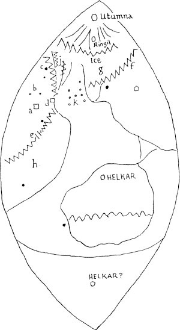
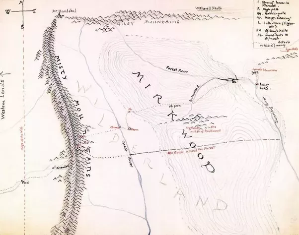
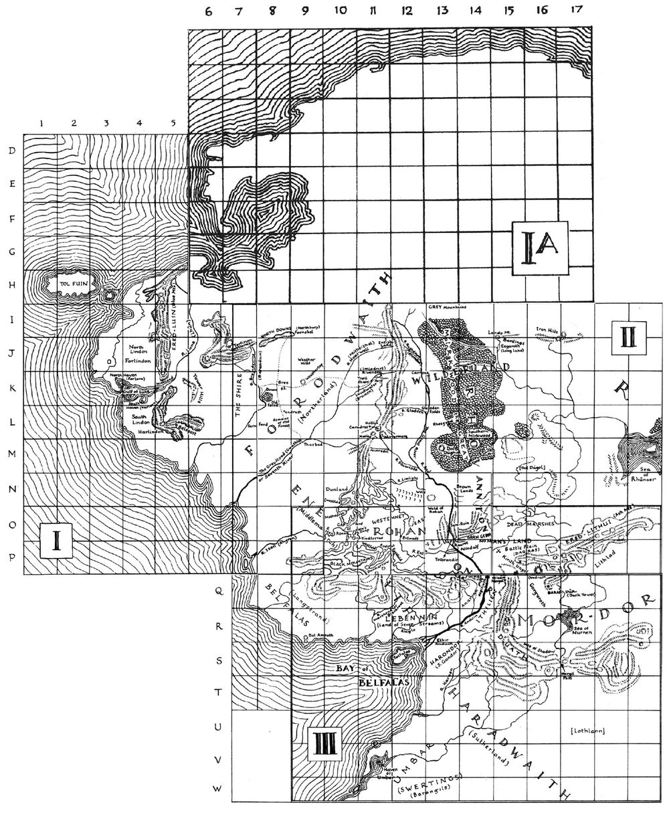
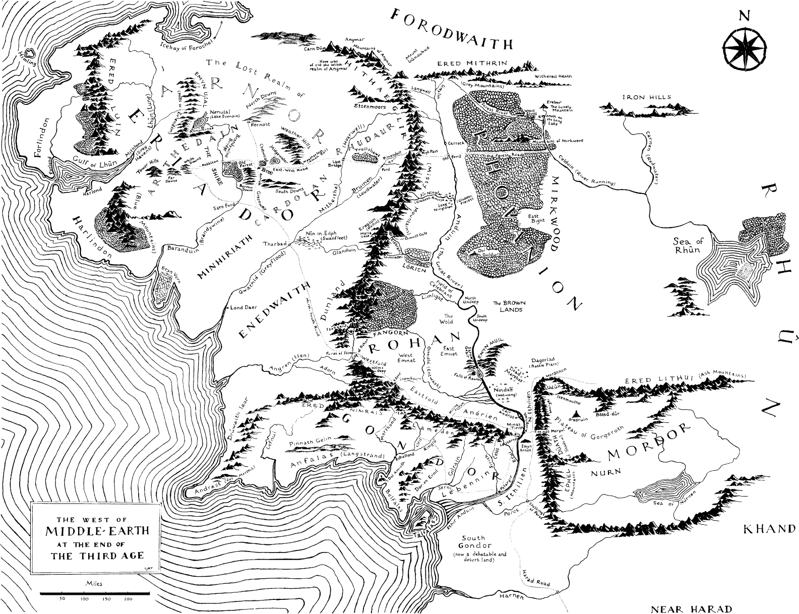
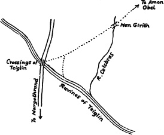

3. prosinec 1892 - 2. vinotok 1973

| zaporniki | ÑZ | p | Ñ_ | b | Ñ" | t | Ñ% | d |
| priporniki | Ñ[ | f | Ñ` | v | ÑÊ | h | ||
| nosniki | ÑP | m | ÑÀ | n | ||||
| tekoči (ang. liquid) |
ÑF | r | Ñ? | l | Ñz | ʀ | Ñy | ʟ |
| drsniki | Ѻ | ʍ | ѹ | w | Ñ» | j | ѽ | ç |
| ÒÑ ÔÑ |
i | ÔÑ èÑ |
e | ÒÑ èÑ |
ə | ×Ñ ÖÑ |
æ | ÖÑ ×Ñ |
a | ÜÑ ÞÑ |
o | ÞÑ ÜÑ |
u |
Iz Tolkienovih zapisov ni razvidno, ali gre pri rabi vodilne črte za ločevanje med knjižno in drugo rabo.
Ne glede na smer pisanja, je sarat vedno obrnjen z isto stranjo k vodilni črti in naslednjemu, oz. predhodnjemu saratu (to pomeni, da so sarati pri pisanju od leve proti desni zrcaljeni glede na pisanje od desne proti levi).
Za zapisovanje angleščine
| zaporniki | ÑZ | p | Ñ" | t | Ñd | k | ||||
| Ñ_ | b | Ñ% | d | Ñe | g | |||||
| priporniki | Ñ[ | f | ѱ | θ | Ñi Ñ‚ |
s | Ñp | ʃ | Ѿ | h |
| Ñ` | v | ѳ Ñ· |
ð | у | z | Ñs | ʒ | |||
| nosniki | ÑP | m | ÑÀ Ñ+ |
n | ÑT ÑV |
ŋ | ||||
| drsniki | ѹ | w | Ѻ | (h)w (when) |
Ñ» | j | ||||
| tekoči (ang. liquid) |
ÑF | r | Ñ? | l | ||||||
| zlitniki in sklopi | Ñ# | t͡ʃ | Ñ… | st | Ñüd | ks | Ñþ? | lz | ||
| Ñ& | d͡ʒ |
| ÔÑÈ | i | ÔÑ» | iː | ÞÑÈ | u | Þѹ | uː |
| èÑÈ | e / ɛ | ÖÑÈÒ | ə | ÜÑÈ | o / ɔ | äÑÈ ÜÑÌ |
oː / ɔː |
| ×ÑÈ | æ | ÒÒÑ | ɜː | ÖÑÈ | a / ɑ | ÖÑË ÖÑÈ× ÖÑÈ |
aː / ɑː |
Za zapisovanje angleščine, stare angleščine in goldogrinščine (iz. ang. Goldogrin)
Ta način temelji na največ Tolkienovih zapisih (od česar jih večina opisuje pisavo in niso pravi zapisi v saratiju).
Glasoslovni način se deli na tri različice (glede na določena znamenja in posebne glasove):
Za glasoslovno način bo tu privzeta tretja različica kot najbolj izpopolnjena.
| zaporniki |
|
Ñ" | t | Ñh | t͡s (→s) |
|
Ñ# | k (→t͡ʃ) |
|
ѱ Ѷ |
kʲ / tʲ / c | |||||||||||||||||||||||||||||||||
| Ñ_ ÑV |
b | Ñ% Ñ€ |
d | Ñl | d͡z | Ñs | d͡ʒ | Ñ& | g |
|
ѳ ѷ |
gʲ / dʲ / ɟ | ||||||||||||||||||||||||||||||||
| nesičniški priporniki |
|
|
|
|
|
|
|
|||||||||||||||||||||||||||||||||||||
|
|
|
|
|
|
|||||||||||||||||||||||||||||||||||||||
| sičniški priporniki |
|
|
||||||||||||||||||||||||||||||||||||||||||
|
у | z | Ѥ ц ѣ |
ʒ (→ç) | ||||||||||||||||||||||||||||||||||||||||
| nosniki |
|
|
|
|
Ñ. | ŋ̊ʷ (→ŋʷ) | ||||||||||||||||||||||||||||||||||||||
| ÑP | m |
|
щ Ѩ ц |
nʲ, ɲ |
|
|
||||||||||||||||||||||||||||||||||||||
| polglasniki, drsniki | Ѽö | ɥ̊ | ѽ | j̊ | Ѻ | hʷ | ||||||||||||||||||||||||||||||||||||||
| Ѽ | ɥ | Ñ» | j, ɪ̯ | ѹ Ѹ |
w, ʊ̯ | |||||||||||||||||||||||||||||||||||||||
| tresavci |
|
ÑK ÑL |
r̥ʲ | Ñ{ | ʀ̥ | |||||||||||||||||||||||||||||||||||||||
| ÑF | r |
|
Ñz | ʀ | ||||||||||||||||||||||||||||||||||||||||
| obstranski glasovi |
|
ÑÒ5 ÑÒ6 Ñ7 ÑD |
ʎ̥, l̥ʲ | Ñyö Ñ| |
ʟ̥ | |||||||||||||||||||||||||||||||||||||||
| Ñ? | l |
|
Ñy | ʟ | ||||||||||||||||||||||||||||||||||||||||
| sklopi | Ñ8 | ps (→p) | Ñw | ks (→s) | Ñv | st | Ñi | sk (→z) | ||||||||||||||||||||||||||||||||||||
| Ñx | gz | Ñ} | zd | Ñj | zg | |||||||||||||||||||||||||||||||||||||||
| Ñ"Õ | tt | Dvojni/dolgi soglasniki Ena možnost je označevanje z dvojnima pikama pod saratom, vendar je to enako samoglasniškim znamenjem za e/i, ki so v nekaterih primerih pod saratom (glej samoglasnike). |
| òÑ% | dd | Druga možnost je označevanje z ravno črtico, vzporedno z vodilno črto, nad ali pod saratom. V 3. različici je to isto znamenje uporabljeno za dolge samoglasnike. |
| òÎÑ% | did | Tako je mogoče označiti tudi samoglasnikim med dvema enakima soglasnikoma, tako, da se samoglasniško znamenje umesti med sarat, oz. vodilno črto in podvojevalno znamenje. |
| ÑZë | mp | Predhodni nosnik, izgovorjen na istem mestu kot sledeči zapornik (npr. mp/mb, nt/nd, ŋk/ŋg) |
| ÑĠ | st/zt | Predhodni (sičniški pripornik) s/z Označen je z dvojnima črticama na zadnji strani sarata |
| Ñġ | ts/tz | Sledeči (sičniški pripornik) s/z Označen je s kljuko na sprednji strani sarata. |

I Vene Kemen je naslov zgodnje risbe J. R. R. Tolkiena. Ilustracija je "zemljevid" sveta v obliki ladje, kot je bil zamišljen v najzgodnejši različici legendariuma, Knjigi izgubljenih zgodb I (ang. The Book of Lost Tales I). Na risbi so prikazane naslednja mesta in pojmi:
Christopher Tolkien je predlagal, da je I Vene Kemen kenjsko ime, ki morda pomeni "Oblika Zemlje" ali "Posoda Zemlje".Element vene je verjetno povezan s korenom VENE ("oblika, izrez, zajemalka") in njegovo izpeljanko venë ("majhen čoln, posoda, jed"). Za element kemen sta v Leksikonu Qenya zapisani besedi kemi ("zemlja, zemlja") in kemen ("zemlja"), izpeljani iz korena KEME.

Najzgodnejši zemljevid zahodnih dežel in oceanov; ustvarjen približno v letih 1918/19, ter objavljen v Knjigi izgubljenih zgodb I (ang. The Book of Lost Tales I), to je različica, ki jo je Christopher Tolkien prerisal po očetovi zabrisani in obledeli skici. Pred oznako Ice je bila še ena neberljiva besede, ki se je začela na M. Črke je dodal sam za lažjo razlago:
Zemljevidi Ambarkanta se nanašajo na niz petih zemljevidov in diagramov (Diagram I, Diagram II, Diagram III, Zemljevid IV, Zemljevid V), ki jih je narisal J. R. R. Tolkien in so povezani z njegovim delom "Ambarkanta: Oblika sveta (The Shape of World)", napisano v 1930-ih (besedilo je Tolkien pripisal Rúmilu). Zemljevidi so bili ponatisnjeni v knjigi The Shaping of Middle-earth (1986).


Ambarkanta: Diagram I, narisan v 1930-ih prikazuje obliko Arde pred Spreminjanjem sveta, od zahoda proti vzhodu in od zenita proti nadiru. Velika kopna gmota, ki sestavlja večji del Arde, je tu poimenovana Ambar, Zemlja. Najbolj oddaljeni deli Ambarja so označeni kot Númen in Rómen, Zahod in Vzhod. Osrednje kopno Ambar je tu poimenovano Pelmar, tudi Ambarendya. Sredinska točka se imenuje Endor. Zahodno in vzhodno od osrednjega kopnega je napisano Ear, morja. Od zahodne obale zahodnega morja do vzhodne obale vzhodnega morja se razprostira Vista, nižji zrak. V teh zrakih je napisano Aiwenore, "Ptičja dežela", nad njim pa Fanyamar, "Dom oblakov". Nad Visto in okoli Ambarja je Ilmen, zgornji zrak. Ti pokrivajo deželo Aman in Skrajni vzhod, segajo pa tudi pod Martalmar, korenine Zemlje. V razponu Ilmena sta zapisani tudi njegovi drugi imeni, Tinwë-mallë in Elenarda, ki pomenita "Zvezdna ulica" oziroma "Zvezdno kraljestvo". Ambar obdaja Vaiya, Obdajajoče morje. Za Vaijo sta le Kúma in Ava-Kúma, bližnja in zunanja praznina. Vaijo od Kúme ločuje Ilurambar, Obzidje sveta, ki je prebito pri Ando Lómenu, Vratih noči na zahodu. Na samem dnu diagrama je zapisano Ilu, zgodnje ime za svet Arde.
Vaija, ki v celoti obkroža svet, tvori morje pod njim. Ulmo, vladar voda, prebiva v Vaiyi, pod Martalmarjem. Mnogo pozneje je bilo s svinčnikom spremenjenih in dodanih nekaj besed, ki v naslovu namesto Ilurambarja dajejo Earambar, Skrito polovico tik pod Martalmarjem in Ardo namesto Ilu. Zapis s svinčnikom v desnem spodnjem kotu je za besedami "Spremeni zgodbo Sonca" prešibek, da bi ga bilo mogoče razbrati; zapis na levi se glasi: "Naj bo svet vedno globus, vendar večji kot zdaj. Gore na vzhodu in zahodu preprečujejo, da bi se kdo odpravil na Skrito polovico".


Ambarkanta: Diagram II prikazuje obliko Arde pred Spreminjanjem sveta, od severa proti jugu. Ponovno se izkaže, da je Ambar sestavljen iz Endora v zgornjih predelih in Martalmarja v njegovih najglobljih globinah. Vista pokriva Endor od severa do juga, Ilmen pa obdaja ves Ambar, čeprav je na severu in jugu veliko manj kot na zahodu in vzhodu, kot je bilo prikazano prej. Vaiya obkroža ves svet Ilu, ki ga od Kúme ločuje reka Earambar. Do najbolj oddaljenih krajev na obeh koncih sveta je zapisano Formen in Harmen, torej sever in jug.


Ambarkanta: Diagram III prikazuje obliko Arde po Spremembi sveta. Tu je celoten Ambar okrogel: Stare dežele ravne Arde zdaj sestavljajo eno polovico okrogle Arde, Nove dežele pa drugo polovico Arde. Vista je spodnja atmosfera, Ilmen pa zgornja atmosfera in vesolje. Valinor in Eressëa se nahajata v Ilmenu. Za Ilmenom je še vedno Vaiya in praznine za njo. Prehod iz ukrivljenosti zemlje v Valinor v Ilmenu je Ravna pot.

Ambarkanta: Zemljevid IV prikazuje dežele Arde okoli leta 500 v.š. po padcu Dveh svetilk (Helkar in Ringil) in prvi Melkorjevi utrditvi severa, ter pred Vojno bogov. Vode in zraki Vaiye in Ilmena obkrožajo deželo, Ilmenovo brezno pa ločuje zemljo od Vaiye. V regiji, imenovani "Zahod - Númen", leži Valinor in mesto Valmar. Severovzhodna in jugovzhodna območja Valinorja sta poimenovana Eruman in Arvalin. Ob obalah je zapisano Westland ali Westerness. Sredi Valinorja na vzhodni obali je mesto Tún v bližini gore Taniqetil. Severno in južno od Taniquentila se razprostirajo Valinorske gore, na obali Zaliva Vilinske dežele pa je Eldaros (Elvenhome). Vzhodno od Valinorja v Belegaerju ali Velikem zahodnem morju leži niz otokov, imenovanih Začarani čarobni otoki in Senčni otoki.
Valinor je na vzhodu ločen s Pelmarjom ali Srednjim svetom, na jugu ga ločuje Ledena ožina, na severu pa Helkaraksa. Na skrajnem severu Srednjega sveta, blizu Helkarakse, je Falasse, zahodna obala Belerianda. Vzdolž severnih predelov Srednjega sveta se razprostirajo Železne gore, ki Utumno ločujejo od preostalega sveta. Na vzhodnih mejah Belerianda se razprostira Modro gorovje, ki se na vzhodni strani Srednjega sveta, na severni strani Severne dežele, zrcali v Rdečem gorovju. Na jugu Severne dežele med Modrim in Rdečim gorovjem leži Helkarsko morje, na njegovem vzhodnem koncu pa je Kuivienen. V samem središču Ambarja blizu zahodnega dela Srednje dežele (Mid-land) sta zapisana Srednja-Zemlja in Endor. Vzhodno od Srednje dežele so Gore vetra, ki so zahodna meja Hildóriena. V Južnih deželah Srednjega sveta je morje Ringil, med Sivimi gorami na zahodu in Rumenimi gorami na vzhodu. Najjužnejša točka Srednjega sveta je označena z Jug in Harmen.
Vzhodno od Srednjega sveta so dežele Sonca, imenovane tudi Vzhodne dežele (Eastlands ali Easterness). Obe celini ločuje Vzhodno morje, na skrajnem severnem in skrajnem južnem koncu pa ležita še dve ledeni ožini. V teh deželah ležijo Gore ali Stene Sonca. Najbolj oddaljena vzhodna točka Ambarja je označena kot "Vzhod - Rómen".

Ambarkanta: Zemljevid V prikazuje dežele Arde po Vojni bogov in pred Spremembo sveta. Dežele Arde obdajajo Zunanja morja Utgarsecga, staro angleško ime od Vaiya. Tu sta Aman in Zunanje dežele (Valinor) ponovno prikazana na zahodu sveta, z regijama Araman na severu in Arvalin na jugu. Nekoliko južneje od Aramana se nahajajo zavetišča Alflon. V osrednjih predelih Amana so Dve drevesi, Tún, Valmar in Taniquetil. Vzhodno od obale Valinorja leži zaliv Faery. Na najsevernejši točki je dežela Aman še vedno povezana z Ostalimi deželami prek Helkaraksë, ki vodi čez severne predele Velikega morja Belegar. Tu je navedeno tudi staroangleško ime Velikega morja - Ingarsecg.
Na tem zemljevidu so zdaj vidne podrobnosti o deželi Beleriand. Dežela Hithlum in trdnjavi Angband ter Thangorodrim ležita na severu blizu Daidelosa, severnega puščavja. Severni in južni del Srednjega sveta ločuje Veliki zaliv (morda poimenovan tudi kot Beleglorn), Ožine sveta pa povezujejo zaliv z Notranjim morjem.
Na jugozahodu sveta leži Temna dežela (Južna dežela), ki jo od Srednjega sveta ločuje razširjeno Vzhodno morje. Na skrajnem vzhodu sveta ležijo Ožgane dežele Sonca in Obzidje Sonca blizu zahodne obale.


Prvi "Silmarillion" zemljevid je zemljevid Belerianda, ki ga je J. R. R. Tolkien narisal na en list (verjetno v letih 1926-30; 2. zemljevid zgoraj), z dvema dodatnima listoma, ki dajeta razširita zemljevid še na vzhod in zahod osrednjega zemljevida (črno-bela zemljevida na levi in desni strani glavnega zemljevida).
(Spodaj je še novejša poustvarjena različica glavnega zemljevida.)


Drugi "Silmarillion" zemljevid je zemljevid Belerianda, narisan v 1930-ih v manjšem merilu na štirih listih, ki ga je narisal J. R. R. Tolkien v zgodnjih tridesetih letih 20. stoletja za Quenta Silmarillion.
Christopher Tolkien je leta 1987 na novo narisal kot dodatek k The Lost Road and Other Writings. Ta zemljevid je bil podlaga za zemljevid Belerianda in dežel na severu, ki je vključen v Silmarillion (1977).
Izvirnik je bil prvič reproduciran v knjigi Tolkien Maker of Middle Earth, ki je izšla leta 2018 in sovpada z istoimensko razstavo.

Zemljevid v The War of the Jewels (1994) je še ena objavljena reprodukcija drugega zemljevida iz Silmarilliona, ki je vsebovala "poznejše spremembe in dodatke" s komentarji sprememb. Poleg tega je Christopher v istem zvezku objavil tudi preurejeno različico fotokopije severovzhodnega dela istega zemljevida, ki jo je hranil in opremil s opombami njegov oče.

Zemljevid Belerianda in dežel na severu iz Silmarilliona prikazuje regijo Beleriand.
Zemljevid je Christopher Tolkien predelal po "Drugem zemljevidu Silmariljona" J. R. R. Tolkiena, ki je bil razdeljen na štiri liste in je bil zadnji zemljevid Belerianda, ki ga je izdelal John Ronald ("originalni" zemljevidi brez sprememb so bili reproducirani v knjigi The Lost Road). Vendar je Tolkien še naprej dodajal in spreminjal imena ali značilnosti na rokopisih zemljevidov; Christopher jih je povzel v The War of the Jewels.
Barvna različica, ki jo je izdelal H. E. Riddett, je običajno natisnjena na zaključnem papirju trde vezane izdaje The Silmarillion.
Christopher je ugortovil, da je prikaz izvirov rek Esgalduin in Aros neustrezen; na izvirnem zemljevidu sta reki namreč izhajali iz istega izvira.

Skica Throrove karte.


Throrova karta, narisana za Hobita, l. 1936. Tolkien je želel, da bi mesečeve rune zasijale na hrbtni strani, ko je bila stran obrnjena proti svetlobi (kot v besedilu), vendar je bilo to pretežko ali predrago doseči s tiskom, zato so bile le izrezane in prilepljene na sprednjo stran zemljevida. V ponatisu je bila objavljena v Hobitu (in kot slika št. 86 v knjigi J.R.R. Tolkien: Artist and Illustrator). Predhodna različica zemljevida pa je na plošči št. 85 v knjigi Artist & Illustrator.
Leta 1979 je bila pri založbi Allen & Unwin objavljena barvna različica H. E. Riddetta kot plakat (skupaj z zemljevidom "Divjine").
Runski zapisi na zemljevidu so v anglosaksonskem futharku, vendar v sodobni angleščini in ne v khuzdulu. Besedilo na levi strani pod roko se glasi:
five
feet high
the door an
d three may
walk abre
ast.
Th. Th.
Na skici so vidne mesečeve lune, ki se glasijo:
Stand by the grey st
one when the thrush kn
ocks and the setting s
un with the last light
of Durin's day will sh
ine upon the keyhole
Th.

Zgodnja skica Divjine

Zemljevid Divjine, ki prikazuje regijo Rhovanion, je vključen v Hobita (in kot plošča št. 87 v knjigi J. R. R. Tolkien: Umetnik in ilustrator); prikazuje nevarnosti, ki prežijo na škrate in hobite na poti čez Rob divjine (označen z dvojno modro črto na levi).
Zemljevid je narisal J. R. R. Tolkien l. 1937 za Hobita, predhodna različica zemljevida pa je na plošči št. 84 v knjigi J. R. R. Tolkien: Artist & Illustrator Leta 1979 je pri založbi Allen & Unwin izšla barvna različica H. E. Riddetta v obliki plakata

Najstarejši zemljevid Šajerske, narisan za Gospodarja prstanov okoli leta 1937. V knjigi Hobit sprva ni bilo zemljevida Šajerske, vendar je bila to ena prvih stvari, ki jih je Tolkien narisal, ko je začel pisati nadaljevanje.

"Del Šajerske"Del Šajerske (A Part of the Shire)" je naslov zemljevida, ki sledi prologu v Bratovščini Prstana.
Od vseh zemljevidov v objavljenih delih J. R. R. Tolkiena je bil le Thrórov zemljevid narejen v manjšem merilu, zato je na zemljevidu Dela Šajerske veliko zemljepisnih podrobnosti o Šajerski, ki jih ni nikjer drugje.

.jpg)
Prvi zemljevid Gospodarja prstanov se nanaša na najzgodnejši zemljevid zahodnih predelov Srednjega sveta, ki ga je narisal J. R. R. Tolkien med pisanjem Gospodarja prstanov med letoma 1937 in 1949. Zemljevid ima kvadrate s stranico 2 centimetra in kartografsko merilo, kjer sta 2 centimetra enaka 100 miljam. Christopher Tolkien ga je v knjigi The Treason of Isengard (1989; 15. poglavje) ponovno narisal in komentiral.
Prvi zemljevid Gospodarja prstanov pokriva večje območje Srednjega sveta kot Splošni zemljevid Srednjega sveta ali zemljevid Zahod Srednjega sveta ob koncu tretjega veka. Na njem so prikazane tudi dežele severno od Forochelskega zaliva in otok Tol Fuin zahodno od otoka Himling ob obali Forlindona v oceanu Belegaer. Morje zahodno od zaliva Forochel je bilo s svinčnikom označeno kot Severno morje.
Oznaka "Forodwaith (Severna dežela)" je zapisana na območju med reko Baranduin in reko Gwathló in se razteza od južno od Sarn Ford do onkraj severnega konca Meglenega gorovja. Na zemljevidu ni oznake "Eriador". Vendar je J. R. R. Tolkien na zemljevidu Gospodarja prstanov iz leta 1943 za besedo "Forodwaith" dodal "(ali Eriador)", kar skupaj z odsotnostjo imena Eriador v zgodnejših rokopisih kaže, da je bil Forodwaith sprva uporabljen kot ime regije, ki se je pozneje imenovala Eriador.
Oznaka "Westfold" je bila napisana južno od oznake "Dunland" zahodno od južnega konca Meglenih gora in severno od reke Isen, vendar je bila prečrtana in ponovno vstavljena zahodno od Edorasa, severno od severnega vznožja "Črnih gora". To in uporaba imena Westfold za deželo Westfoldov, zavojevalcev Rohana v zgodnejših osnutkih knjige Stolpa, nakazujeta, da je bil Westfold sprva uporabljen kot ime pokrajine, ki se je pozneje imenovala Dunland.
(Zemljevid na levi je srednji list/odsek celote.)


Pogled na Mordor in Goro usode iz ptičje perspektive, narisano v 1940-ih. To je bila zgodnja zasnova geografije Mordorja. Tolkien je z razvojem zgodbe spreminjal relativni položaj Barad-dûrja in Gore smrti.

Pogled iz zraka (in od strani) na Helmovo tesen, narisano okoli leta 1942 pod pisnim opisom iz 3. knjige, 7. poglavja Gospodarja prstanov.

Zemljevid severozahoda Srednjega sveta, narisan za Gospodarja prstanov, okoli leta 1948. To je severna polovica para zemljevidov, ki pokriva celotno prizorišče dogajanja Gospodarja prstanov.


Zemljevid Rohana, Gondorja in Mordorja, narisan tako, da je Tolkien lahko natančno načrtoval dogajanje, ko je pisal peto knjigo Gospodarja prstanov, okoli leta 1948. Za objavo v knjigi Kraljeva vrnitev jo je na novo narisal njegov sin Christopher.



Razširjeni sestavljeni zemljevid Srednjega sveta zgornjih odsekov iz The Treason of Isengard, ki ga je narisal Christopher Tolkien

Na zemljevidu Númenórë, ki se pojavlja v Nedokončanih zgodbah, je upodobljen otok Númenor.
Zemljevid je Christopher Tolkien narisal po verjetno edini skici Númenorja, ki jo je naredil J. R. R. Tolkien.
Neobjavljena skica zemljevida Númenorja vključuje tudi pristanišče Almaida, ki očitno ni omenjeno nikjer drugje v legendariju.
Zemljevid Christopherja Tolkiena v Silmarillionu

Zemljevid Christopherja Tolkiena v Nedokončanih zgodbah

Skica Christopherja Tolkiena po zgodbi v Húrinovih otrocih